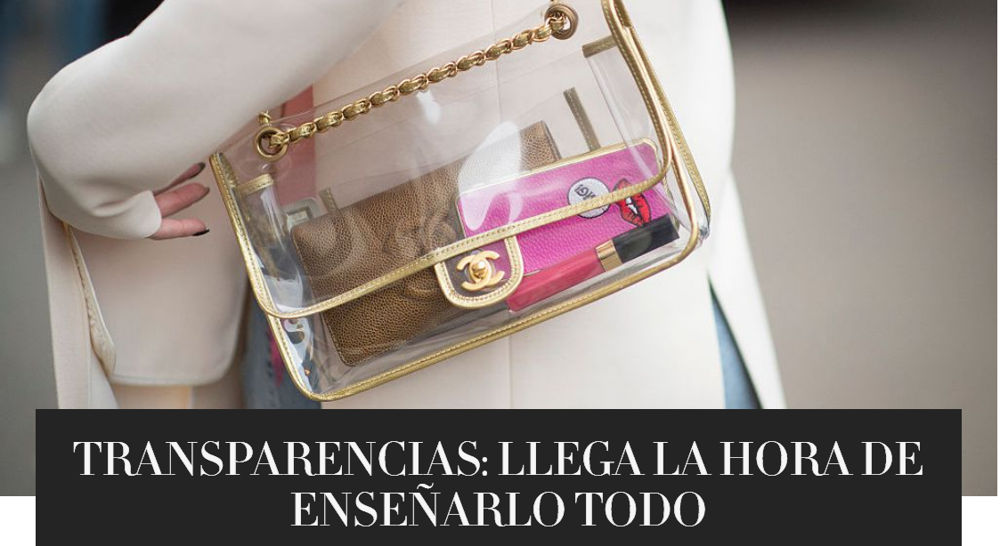
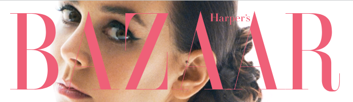
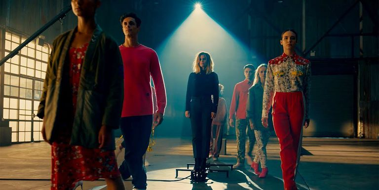

|
La forma de vestir es una parte importante de la sociedad occidental actual. Aunque siempre ha determinado el estatus o la clase social de una persona,
ahora también determina el grupo social al que dicha persona pertenece dentro de una misma clase. Aunque inicialmente el vestido comenzó como una necesidad básica que protegía
al ser humano evolucionado de las inclemencias del tiempo, ya que ha tenido que sustituir el pelo que perdió con la evolución por pieles de otros animales u otros productos vegetales,
con el tiempo el vestido ha ido adquiriendo un carácter estético, y se ha visto sujeto a los cánones de la moda y a las necesidades de cada época. |
|
|
|
| Hoy en día los diseñadores de moda y las marcas de ropa y accesorios pueden ser tan famosos como una celebridad, la moda ocupa un papel importante en la sociedad
y no solo nos permite definir nuestro estilo y ayudarnos a diferenciarnos de los demás, sino ocupar un papel en la sociedad y ser aceptados, nos permite expresarnos
y definir nuestra personalidad, comunicar visualmente nuestros intereses y gustos. Pero a veces tenemos la errónea idea de que la moda está en las tiendas, aparadores
de las avenidas y centros comerciales más costosos y famosos de las ciudades o las zonas más lujosas del mundo y las famosas pasarelas en New York, Milán o Paris pero la
moda podemos verla en tiendas de cualquier nivel económico, en la calle, en la televisión, en el cine y en cualquier medio audiovisual en la publicidad. |
|
En las épocas antiguas, la moda se representaba bajo una organización social planificada, los lideres podían vestir las más majestuosas prendas hechas con materiales que definían a
este grupo de personas. Mientras que las clases inferiores vestían con prendas más simples, esto hacía que las personas se vieran iguales y así quedaban marcadas en esta clase social.
Igualmente que tardaban años, incluso siglos, para cambiar el estilo y la moda, hoy en día la moda se renueva cada temporada y es individual. Ayuda a que una persona exprese su propia personalidad, originalidad y estilo.
La sociedad ha cambiado, la moda constituye un papel muy importante personal y socialmente.
Hay que aceptar que en la moda también influye que una persona se sienta aceptado dentro de la sociedad y con un grupo de personas en específico como puede ser en las tribus urbanas.
|
|




|